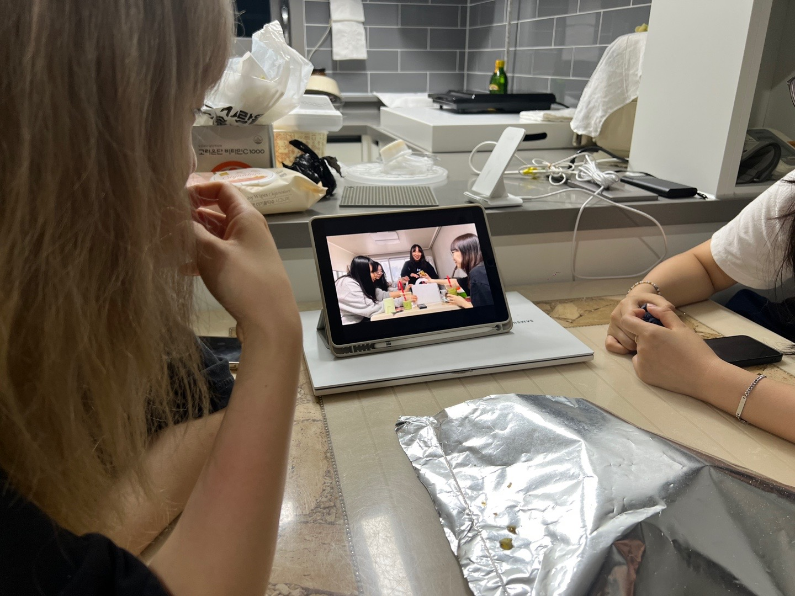
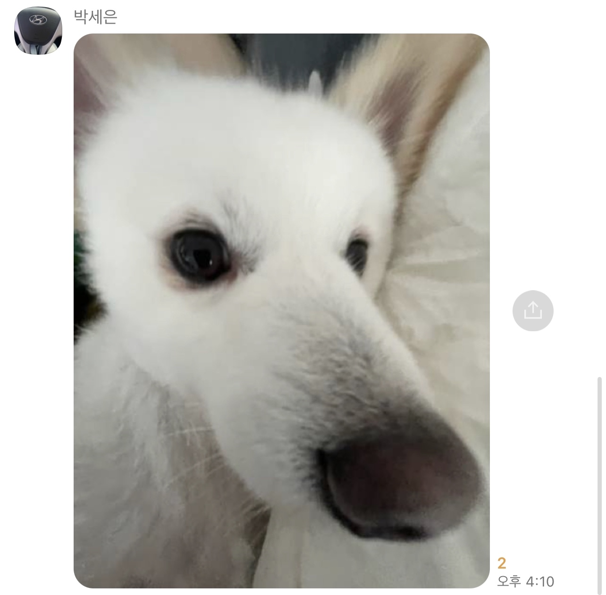

Wizard of Oz
0125+0305+0825+1215 = Wizard of Oz
How we met
Group sound
bring back memories
bring back memories
자네 정신이 좀 드나?
우릴보는 우리를봐 자유로워

메?

To be updated later
Please enable JavaScript to view the
comments powered by Disqus.